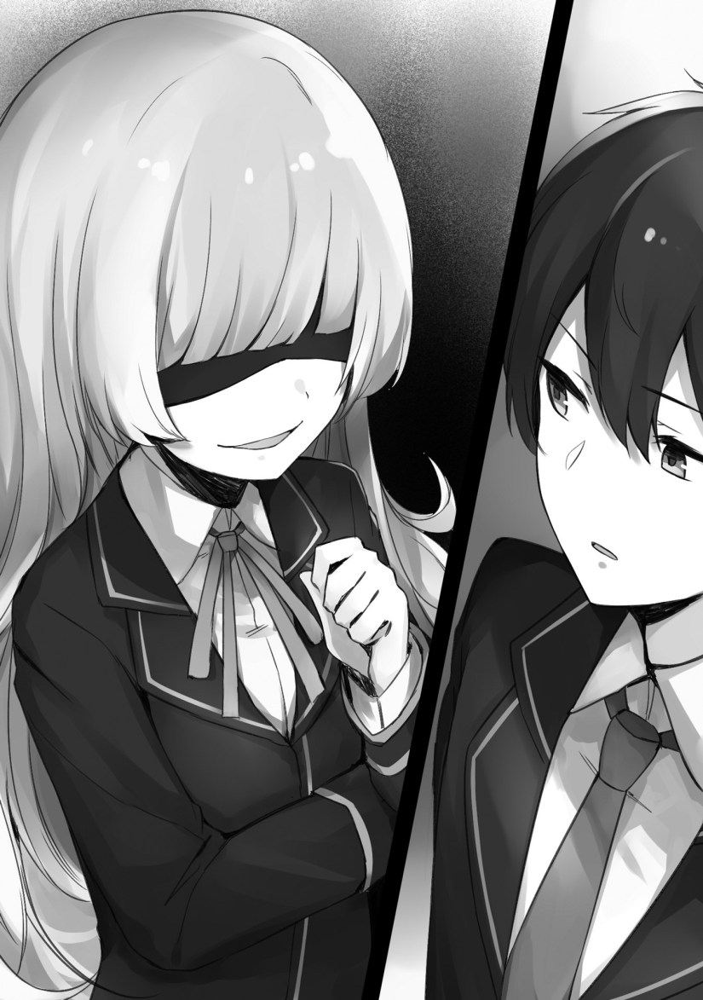

The Protagonist and the Villainess
Well, several weeks have passed since the entrance ceremony.
There weren’t any noteworthy events or anything of that sort for a mob like me, and I was finally getting used to this unfamiliar life at the academy.
In terms of the game, this is around the time where the protagonist would finish meeting with the male capture targets. Now that she’s finished raising the flags in rapid succession, I suppose this is the period where she gets familiar with the capture targets.
Perhaps since the real protagonist is sly, this is the time where she’s thinking about narrowing down who to go after?
Then, I suppose this is around the time where the villainess would show up and say “Know your position.” I can’t recall the details too well since I played the game many times over and ended up using the skip function to skim through the text.
Well, I’ll leave the story of the protagonist and co. alone without getting involved.
Now that I’ve begun to get used to life at the student dorms, I’m in the process of deciding which friends to associate with.
I’m talking about Daniel and Raymond.
It’s also due to the two being placed close to me, but the environment in which we were raised was practically the same. Due to that, conversations between us go well.
We were at a bench in the academy’s courtyard.
The three of us guys were sitting down while talking about the plans for a tea ceremony in the beginning of May.
“So, what to do for a tea ceremony? We should probably choose who to invite, right?”
During the break in May, the girls have time off, but it’s different for the boys. It’s when they can invite girls to tea ceremonies to shorten the distance between them.
It’s not an event where anybody can send an invitation to anyone like a playboy would. One has to choose a suitable partner from a household of the same rank to invite.
Then, they have to properly open a tea ceremony and not be rude to their partner.
The tea ceremonies have become an unofficial event in the academy…Well, they prepare lessons for boys on how to welcome women as a gentleman, and that’s so that they can show it off during the break in May.
Raymond cast his eyes downwards towards Daniel’s worry.
“We do have our allowances from home, but we can’t make a luxurious tea ceremony. Any girl would be fine as long as they participate in my tea ceremony.”
The academy costs money, even though we aren’t charged for living expenses like tuition fees or meals. Boys in particular are charged quite an amount of money, and is something they can’t work around.
Even though I have some money in reserve, that’s not a reason to burn through it, and I don’t want to use it.
Why is it that we have to use up a large amount of money to humor a girl?
The thing about this tea ceremony…is that if one avoids doing it or just doesn’t set one up, then the girls will start spreading rumors about them through their network. They’ll spread talks about how that person didn’t open a tea ceremony, and it would put them at a disadvantage when it come to marriage.
Even if they’re not interested in a partner, they still need to make a solid tea ceremony.
Like how us boys share our information around, the girls share their information around as well. Becoming an enemy of the girls means having them spread bad rumors, making things tedious.
This is yet another aspect where boys are at a disadvantage. In the first place, since girls hold the strong position in marriages, the boys are ultimately left with a weak one.
Then, there’s one problem.
My merits have allowed me to exert independence after graduation, and I’m seen as a rich person by my surroundings. They’re aware that I’ve gotten my hands on treasures of gold and silver.
“Does this mean I have to do a formal tea ceremony? It seems I do. Honestly, that bums me out.”
While the three of us were feeling down before the May tea ceremony, we saw Julian, who could be described as a winner, walking with followers and women accompanying him.
Near him was one of his close friends and bodyguard who was the heir to a viscount household──foster brother “Jilk Fier Memoria.”
He had deep green, long hair that made one question if that was really his natural hair. He had green, droopy eyes that contrasted with the prince’s sharp glare.
Though he’s from a viscount household of the royal court, he’s also a close friend of the prince to the point of being a foster brother. It’s obvious that he will be given an important position in the future.
The girls that talk to him have hearts in their eyes, and there are boys of high-ranking earl households near and far that pridefully follow and serve him.
“Are you going to open a tea ceremony in May, your Highness?”
“I want to participate too.”
“M, me too!”
Looking at the girls who wanted to be invited to the prince’s tea ceremony like dogs wagging their tails, we had to come to terms with reality.
Raymond covered his face with both hands.
“…Since his Highness and other noble families are here, it’s going to be a big hurdle.”
Daniel dropped his shoulders.
“Quite the comparison to make between him and us. Pardon my frankness.”
Looking at the envious scene of the prince and the others, one girl then came along. She had followers surrounding her. It soon became apparent that she was of a high social status…
This person was a daughter of a duke household──”Anjelica Rafua Redgrave.” She was a girl with blonde hair that seemed to sparkle and had an upswept hairstyle.
Her white skin was lovely and her red eyes were fierce.
Her eyes gave off a strong impression and would make someone soon realize that there was something different about her from the others.
It seemed that she and the prince were both people that naturally had something about them.
I believe that on the inside, the protagonist definitely has something grand about her as well. Undoubtedly, there was something about her that made one recognize at a glance that she had a different feel than normal people.
Otherwise, I’m pretty sure that the crown prince and the other capture targets wouldn’t have swayed towards her.
Although she may appear normal, she, the protagonist, definitely has a unique aura surrounding her.
“Is that his Highness the crown prince’s fiancee??”
The girls surrounding both the prince and Jilk took a distance faster than I could say it. It seemed that they weren’t fools who would try to get invited right in front of the prince’s fiancee.
None of them wanted to even say a word.
Anjelica’s eyes got a bit sharp.
“Crown prince your Highness, I have something to talk about regarding the May tea ceremony. Is it alright that we attend together?”
Within the academy, it’s said that one should not to abuse the authority of their position nor their parents’ power, but such a thing is not possible to stop in the real world.
Julian breathed a small sigh.
“Anjelica, you’re coercing the surrounding people. This is the academy.”
“Right, I know. However…the people around you are quite noisy, crown prince your Highness.”
There was no fool in the academy that would go against the daughter of a duke household.
The girls awkwardly averted their gaze from Anjelica.
“I suppose this is the protagonist’s rival. I get this strong feeling that she’s a formidable enemy.”
As I was mumbling to myself, there was one girl remaining in the place where the crowd had dispersed.
I squinted upon seeing her.
If Anjelica was said to be a beautiful woman, then this girl felt like a small and cute person.
She was a girl with blonde hair, blue eyes, and was the daughter of a viscount family.
Her name was “Marie Fou Lafuan.”
She’s someone that I haven’t come to like in any way.
I get irritated looking at her. Yet, it was not a feeling of hatred, but something complex…I can’t put it into words.
Jilk noticed that she was looking over their direction with her blue eyes and notified the prince.
“Your highness.”
“Hmm? Aah, it’s Marie. Perfect, I was looking for you. Can you come over here?”
The prince smiled while looking at Marie.
Anjelica’s eyebrows moved with a twitch.
When one of her followers whispered about Marie into her ear, she knit her eyebrows grandly.
Marie went over to him since her called for her, and a feeling of tension rose in the location.
It seemed that Daniel, with his hands over his stomach, wanted to run away on the spot.
“Can I not go home?”
A quarrel was awakening near the bench, but we would stand out if we got up and escaped. Raymond shook his head.
“No. It’s better not to move until it’s over. All things considered, perhaps she’s the rumored girl.”
Rumored?
“Do you know who she is, Raymond?”
Uneasy about Marie, I asked about her, and it turned out that she was relatively famous.
“You don’t know, Leon? There’s been talks about her. She, Marie, had slapped his Highness Julian.”
Daniel was surprised upon hearing him say that.
“…That’s gotta be a lie, right? I heard that when she dined together with a prestigious noble, she ordered a steak and ate it vigorously. That’s the rumor I know about.”
This time, it was Raymond that was surprised.
“Huh? Is that so? I didn’t hear about a rumor like that. But, it seemed that Julian actually forgave her for the slap while smiling.”
It turned into a conversation about Julian’s leniency, but does this Marie girl not know her surroundings? Then there’s her eating a steak like a guy would…hmm?
“Slap…steak?”
There’s something about this in my memories, but I can’t recall it.
Thereupon, Marie called out to Julian with a lovely voice.
“Could you invite me, your Highness?”
“Actually, the boys have plans to arrange tea ceremonies in May. Since I don’t really want to hold a flashy one, I planned on only inviting acquaintances. So, I wanted to invite you too.”
Hearing that, Anjelica objected.
“Crown prince your Highness, there are rules to the tea ceremonies as well. I won’t say that it needs to be flashy, but a suitable scale──”
However, Julian didn’t cease.
Then I remembered this scene.
──Wasn’t this the game’s coercion event?
However, it doesn’t seem like the protagonist is here. When I stirred around trying to find her face while uneasy, Raymond seemed to have taken notice.
“What are you doing?”
“Well, there’s someone I’m looking for…is the honor student here?”
Raymond similarly looked at the surroundings, but shook his head.
“She’s not here. To begin with, the honor student wouldn’t mix in here. Look, just stay quiet. Bear with whatever you’re feeling until this storm passes.”
We can’t escape.
There were occasionally some students that would try to enter the courtyard, but run away after noticing the strange mood. I’m envious of those that were able to escape.
The prince seemed a bit annoyed while arguing with Anjelica.
“That’s enough, Anjelica. This is the academy. I’m just a student here. You’re my fiancee, but that’s no reason for you to interfere this much.”
Anjelica backed down after hearing that.
“…Excuse my discourtesy.”
Saying that and stepping away, Anjelica glared at Marie in the end before leaving.
Her surrounding followers also turned towards Marie with a harsh look.
“My apologies, Marie. I made you feel bad.”
“N, no, I’m fine. However, is it really okay for me to participate?”
Jilk shrugged his shoulders while smiling.
“His Highness is not fond of formalities. He hopes for a tea ceremony with a light mood. By all means, he wants you to participate, Marie. Besides, his Highness has never been so eager to invite a woman until now.”
Jilk chuckled while the prince looked away in embarrassment.
“A, anyways, I want you to participate. Look, let’s go, Jilk.”
When the prince and Jilk started moving, their followers left as well. However, they too looked at Marie with a complicated gaze.
Daniel and Raymond were relived after having finally been freed, but I looked at Marie’s countenance.
Perhaps not thinking that anyone was watching, Marie negligently let something slip for just a moment. It was really just a moment──but she let out a slight grin.
Turning away from Marie like that, I joined the two in leaving the location.

She doesn’t really look like the girl on the cover, but the chest size is about the same so I guess. Oh well, doesn’t matter since we just want to enjoy a calm life as a mob character right?
Thanks for the chapter!
Marie isn’t the girl on the cover.
Its the loli one. The fiancee one is that darkness look alike
So thats left us with that short haired girl as protagonist
That’s definitely the protagonist female…
Fraid not. Original protagonist is on the front cover with a barely shoulder length bob cut. Marie is the cute girl with the shadow covered eyes, evil grin, and waist length hair shown opposite Leon in the picture on this page just before the Precious, TOC, Next button links. Personally considering Leon’s reaction of anger but not hate when seeing her, and the comment of her seeing prey in her gaze of the prince I figure Marie is the sister who blackmailed him into clearing her game just before he died. Would explain how she knew when and what to say to capture targets to pass events and raise flags, although will have to wait and see on how Marie prevented original protagonist from clearing the events and raising the flags herself.
Thanks for the chapter.
Okay okay. Another girl or his sister? His sister of course. But why did she died as well? Traffic accident, drown in the sea? Bumped with her brother on the stairs?
I also think that she is his sister… Propably after knowing his brother dies and manage to send some threatening email to their mother, she become shut in and play the game…then eventually died… That how she know how to rise the flag (slap n steak)…
Thanks for the chapter
So i’m gussing the protag is the one on the front cover?
thanks for the chapter
yup chick definitely is his sister and thanks for the chapter
That*
Thanks for the chapter.
I’ve actually taken the liberty of reading a head in the raws… and I don’t blame our TL for dividing the chapters into parts, they are REALLY long for something on Syosetu. But yeah, Marie is not the “Hero” of the otome game. The only thing I’m spoiling is that the best is yet to come. And… you’ll keep feeling bad for MC, even if he does things to deserve it.
By that do you mean that he became an asshole or that he is stupid and always get’s into Double?
I mean trouble
More like minor setbacks to the slice of life aspect to the tale.
So does he become am asshole?
Considering what we’ve seen from his personality I’d say he’s going to keep his word in lending a helping hand to the original protagonist and causing a commotion as a result. That and get revenge on the capture group at some point for being so weak in the game that he kept getting game overs. Considering the original protagonist is a commoner with no support, money, influential connections, understanding of unwritten rules of interaction, etc. and entering a school of nobles she’s probably going to get really bullied without any members of the capture group shielding her. As the capture group has high nobles in it, such as the topmost class prince, he’s probably going to get ostracized for whatever trouble he gets in with them no matter how minor or righteous his cause is.
I see where this is going.
Reincarnator Maria hijacking all the protag events to give herself the lead role. 80% sure She wants a reverse harem.
MC Going to have fun destroying her boy harem in the combat events.
This make me confused, I think the loli is protag and his previous sister, so girl in cover is the real protag and another reincarnator?
No.. that Marie is not the real protagonist but acting as one so that explains why the scholarship student is not there.. *she a Reincarnator
However the S student..*Real MC* is probably a resident of this world not Reincarnator tho.. i think..
when i saw “S student” first i have thought “S” is for Sadistic
S is for scholarship meaning the scholarship student that was mentioned at the first year party Leon met his two friends at.
Confused
I’m pretty sure Angelica is the more common form of the name than Anjelica; is there any reason you chose the latter?
Your translations sure are getting speedy, thank you for your hard work.
correct me if im wrong but the bluish-navy hair(prince) is Julian but not Julius?
and also it should be Anjelica = Angelica.
Thx for the Chapter~!!
(´｡• ω •｡`)
Chapter 4 and MC’s hard life continues as he worries about spending money on a tea party. Will he spend his savings? Will he go out with his cheat speaceship to make some more?? Do your best ultimate survivor MC!
I think concern for savings was because it seems the girls with slaves/servants in advanced class have similar views and personalities matching Zola’s. Meaning they want to be buttered up, served expensive tea and snacks using an expensive tea set (ie quality isn’t important, just the price.) Heck the tea and snacks alone are probably going to set him back around 5000 to 6000 yen. It’s a cache 22. He either spends a lot of money trying to meet girls who will drink the tea and eat the snacks like it’s their due all just to raise his chances of finding a partner. If he doesn’t spend the money or ticks off his guests, the girls will spread the word around and he’ll get black listed or given a really bad reputation. And it seems the girls have a few more years of time before needing to be married than the boys get so only the boys are in a rush.
Maybe, just maybe he could ignore all the girls shallow enough to be put off by obviously malicious rumors! Imagine that, not bowing to every ridiculous whim imposed on him by the absurd society he finds himself in!
Seriously, he has unlimited wealth, almost untouchable military power, and his own personal plot of land. The idea that he has to follow their rules is completely unbelievable.
Thanks for the translation.. Keeping my fingers crossed on who Marie is .
So i’m guessing the original protag is the main love interest, and the prince’s fiancee becomes one of his friends
Thank you for the post.
The Prince is not behaving like a submissive male in a world run by women. This world is confused as there are many inconsistencies in power dynamics. The Prince should know not to upset his fiancee, especially in a public space.
Corrections/Suggestions..
but the environment in which we were raised is practically the same –> but the environment in which we were raised was practically the same
Us three guys were sitting –> The three of us guys were sitting
Even if they’re not interested a partner, –> Even if they’re not interested in a partner,
While us three were feeling down –> While the three of us were feeling down
Near him was one of his close friends and bodyguards who is the heir –> Near him was one of his close friends and bodyguard who was the heir
Is that his Highness the crown prince’s fiance? –> Is that his Highness the crown prince’s fiancee?
right in front of the prince’s fiance. –> right in front of the prince’s fiancee.
it’s not a feeling of hatred, –> it was not a feeling of hatred,
You’re my fiance –> You’re my fiancee
Thanks.
Thanks for the chapter!
“Marie went over to him since her called for her, and a feeling of tension rose in the location.” Probably Should be “Marie went over to him since he called for her, and a feeling of tension rose in the location.” Just making sure. Anyways Thanks For the Chapter
Cleanse it with fire!!